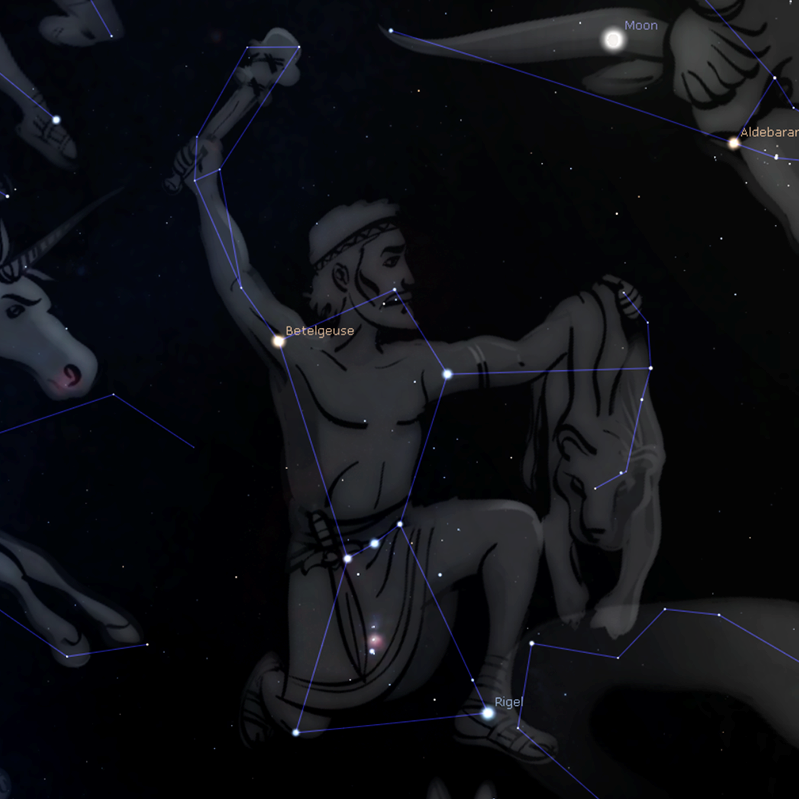

Orion

Созвездие Ориона лучше всего видно зимой-весной. Проще всего найти по трем звездам, входящим в так называемый пояс Ориона: Минтака, Альнилам и Альнитак.
Альфа Ориона Бетельгейзе входит в зимний треугольник (вместе с альфой большого пса Сириусом и альфой малого пса Проционом). Бета Ориона Ригель входит в зимний круг.
Также на звездном небе заметен астеризм Меч Ориона.
Go back to sky map